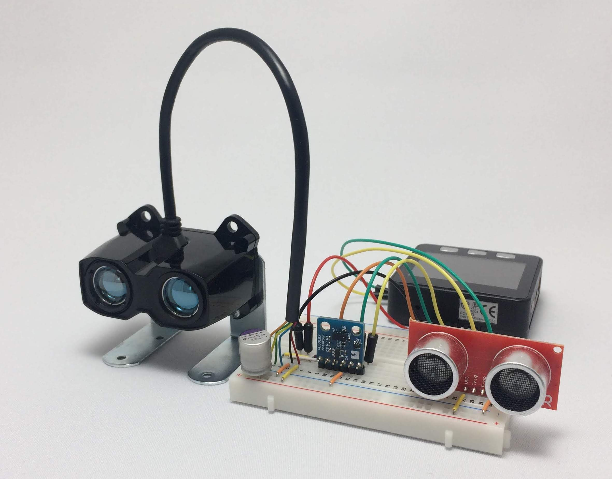
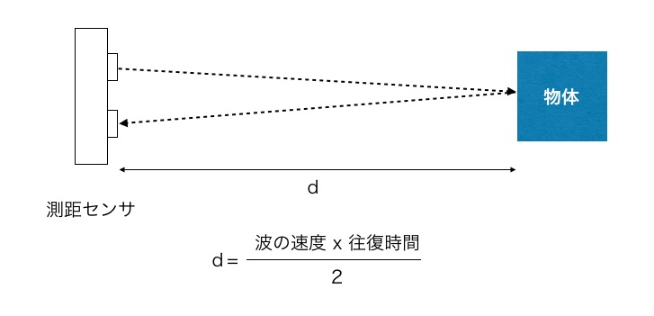

「AmbientでIoTをはじめよう」、第20回はM5Stackで距離を測ります。

測距センサにはいくつかの方式があります。今回使うセンサは、超音波や赤外線レーザーなどを物体に向けて発信し、反射した音波なりレーザーなりを受信して、往復にかかった時間を測定し、それを音や光の速度で割って距離を計算するものです。

今回は三つのセンサで距離を測り、比較してみます。写真の左からガーミン製のLIDAR-Lite v3HP、スイッチサイエンス製のVL53L0X、SparkFun製のHC-SR04です。今回使った距離センサの仕様を表1にまとめました。
HC-SR04は超音波を使った測距センサで、2cmから4mまでの距離が測れ、分解能は0.3cmとのことです。音速は約340m/sなので、1マイクロ秒で0.34mm進みます。1mmの往復で約6μ秒、1mの往復で約6m秒かかる計算になります。HC-SR04は物体までの超音波の往復時間をプログラムで測り、距離を計算します。
VL53L0Xはレーザーを使ったセンサで、2mまでの距離が測れ、分解能は1mmのようです。最短の測定可能距離はデータシートからは分かりませんでした。精度は測定対象の反射率で異なり、白い物だと120cm離れたところで4%、5cm程度、灰色の物だと70cm離れたところで7%、5cm程度とのことです。
LIDAR-Lite v3HPはレーザーを使ったセンサで、測定可能距離はなんと5cmから40mまで測れます。精度は2m未満が5cm、2m以上が2.5cm。照射する赤外線のビーム拡散が8ミリラジアン、角度にすると0.46度ということで、10m先で8cmに広がる程度です。
光の速度は約30万km/sなので、1μ秒で300mも進みます。数センチの精度で距離を測るためにはピコ秒オーダーの時間測定が必要になります。レーザーを使った測距センサはセンサ内部で時間を測定し、距離を計算して、結果をI2Cインタフェースでマイコンに通信します。
三つのセンサをいっぺんにM5Stackにつなぎ、同時に距離を測って比べてみます。
HC-SR04はトリガ端子とエコー端子があります。トリガ端子を10μ秒以上HIGHにすると超音波パルスを発信し、発信してから反射波を受信するまでエコー端子がHIGHになるので、トリガ端子、エコー端子はGPIOにつなげば大丈夫です。M5StackのGPIO2とGPIO5につなぎました。
| M5Stack | HC-SR04 |
|---|---|
| GPIO2 | Trig端子 |
| GPIO5 | Echo端子 |
VL53L0XとLIDAR-Lite v3HPはI2C接続なので、それぞれのSDAをM5StackのGPIO21に、SCLをGPIO22につなぎます。VL53L0Xの電源電圧は3.3〜6Vなので3.3Vに、LIDAR-Lite v3HPは4.5〜5.5Vなので5Vにつなぎました。また、LIDAR-Lite v3HPのデータシートにあるように、5VdcとGNDに間に680μFのコンデンサを入れています。
| M5Stack | VL53L0X | LIDAR-Lite v3HP |
|---|---|---|
| GPIO21 | SDA | SDA |
| GPIO22 | SCL | SCL |
| 3V3 | VDD | |
| 5V | 5Vdc | |
| GND | GND | GND |
HC-SR04はトリガ端子を10μ秒以上HIGHにすると超音波パルスを発信し、発信してから反射波を受信するまでエコー端子がHIGHになります。HIGHの時間が物体までの往復時間なので、それを測り、その半分(片道)を音速で割ると距離が求められます。
エコー端子がHIGHになる時間はArduinoのpulseIn関数で測れます。
pulseIn(pin, value[, timeout]);
pulseInは、ピン番号pinがHIGHまたはLOWである時間を測り、結果をマイクロ秒で返します。timeoutを指定した場合、timeout μ秒経過すると0が返ります。
HC-SR04で距離を測るプログラムは次のようにライブラリにしました。
VL53L0Xで距離を測るライブラリはPololu社が公開しているので、それを使います。Arduino IDEを立ち上げ、スケッチメニューの「ライブラリをインクルード」＞「ライブラリを管理」でライブラリマネージャを立ち上げ、「VL53L0X」で検索し、「VL53L0X by Pololu」の最新版をインストールします。
ライブラリインタフェースはGithubのページにありますが、基本的な使い方は次のようになります。
LIDAR-Lite v3HPのライブラリはガーミンが公開しています。Arduino IDEを立ち上げ、スケッチメニューの「ライブラリをインクルード」＞「ライブラリを管理」でライブラリマネージャを立ち上げ、「lidar-lite」で検索し、「LIDAR-Lite by Garmin」の最新版をインストールします。
基本的な使い方は次のようになります。
三つのセンサをM5Stackにつなぎ、40cm程度の距離に物を置き、距離を測って、シリアルに表示してみました。
出力結果をシリアルプロッタに表示したのが次の図です。
青い線がHC-SR04、赤がVL53L0X、緑がLIDAR-Lite v3HPです。センサを置いた位置やセンサから対象物までの距離が微妙に違うので、絶対値には差がありますが、HC-SR04は値が比較的安定しているのに対し、特にLIDAR-Lite v3HPは測るたびに5〜6cmの幅で値がぶれました。測定に使った個体の問題なのか、センサの特性なのか不明ですが、LIDAR-Lite v3HPは数センチのブレがあるようです。
そこでVL53L0Xは10回、LIDAR-Lite v3HPは20回測定して平均を取るようにしました。測定結果をM5StackのLCDに表示したのが次のプログラムです。
三つのセンサで対象物までの距離を10cmから100cmまで変えて測ってみました。結果が次のグラフです。
青がHC-SR04、赤がVL53L0X、緑がLIDAR-Lite v3HPです。10cmから100cmの範囲ではHC-SR04とVL53L0Xは比較的正しい値が得られているのに対し、LIDAR-Lite v3HPは特に10〜20cmといった近距離では低めの値になるようです。
LIDAR-Lite v3HPは40mまでの距離が測れるので、それを利用して物の速度を測定してみます。

例えば時速40kmで走っている車は1秒間に約11m進みます。そこで、対象物までの距離を0.5秒間隔で2回測り、移動距離から速度を計算してLCDに表示してみました。
測定用のビームが10m先で8cmにしか広がらないので、対象物を捉えるのが難しいですが、うまく捉えられれば速度が測定できます。なお、この製品はclass1のレーザーを使用しています。通常使用時には危険性はありませんが、人に向けては照射しないでください。
この記事はアンビエントデーターの下島が担当しました。